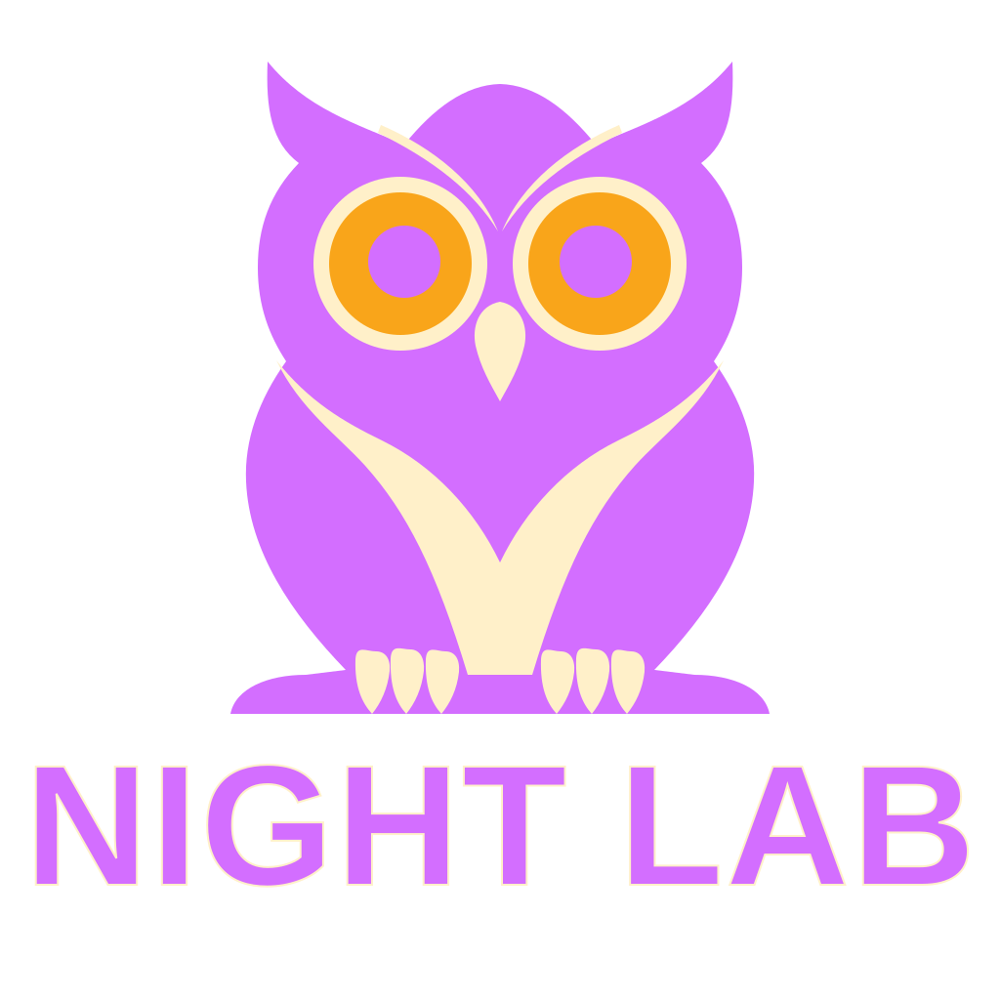
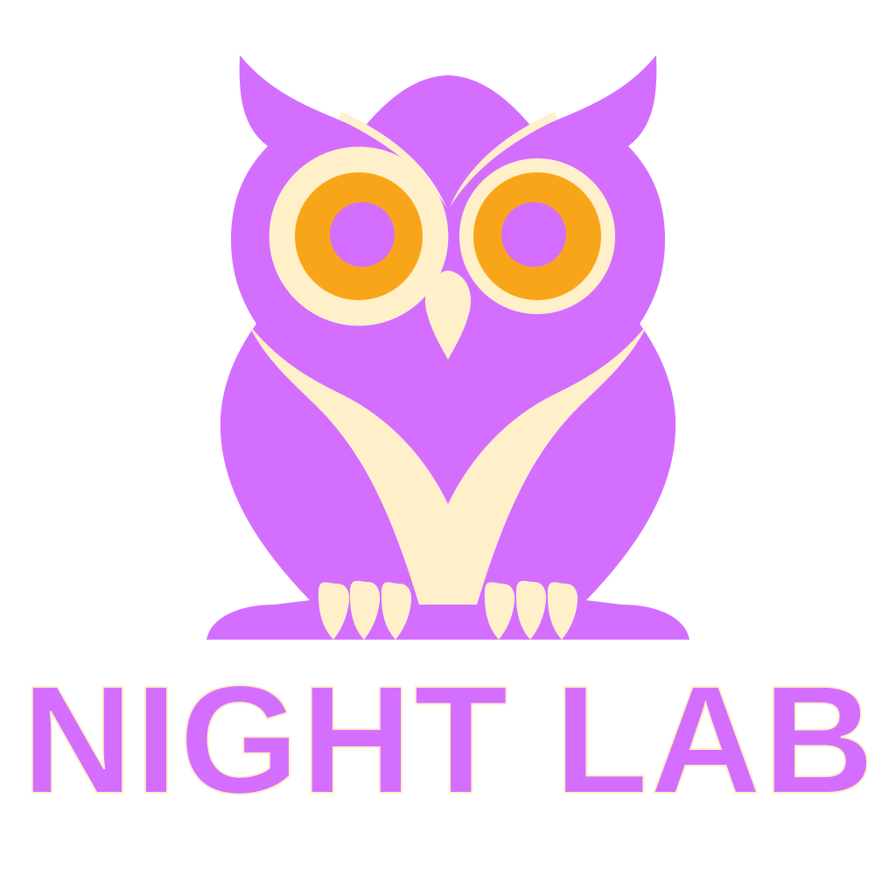
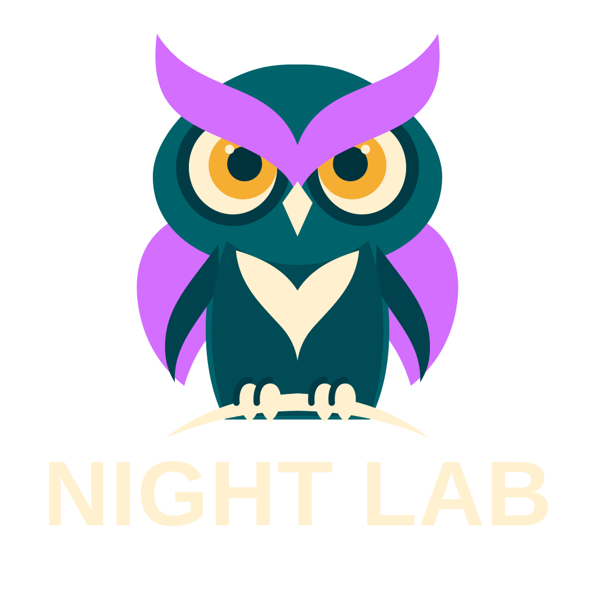
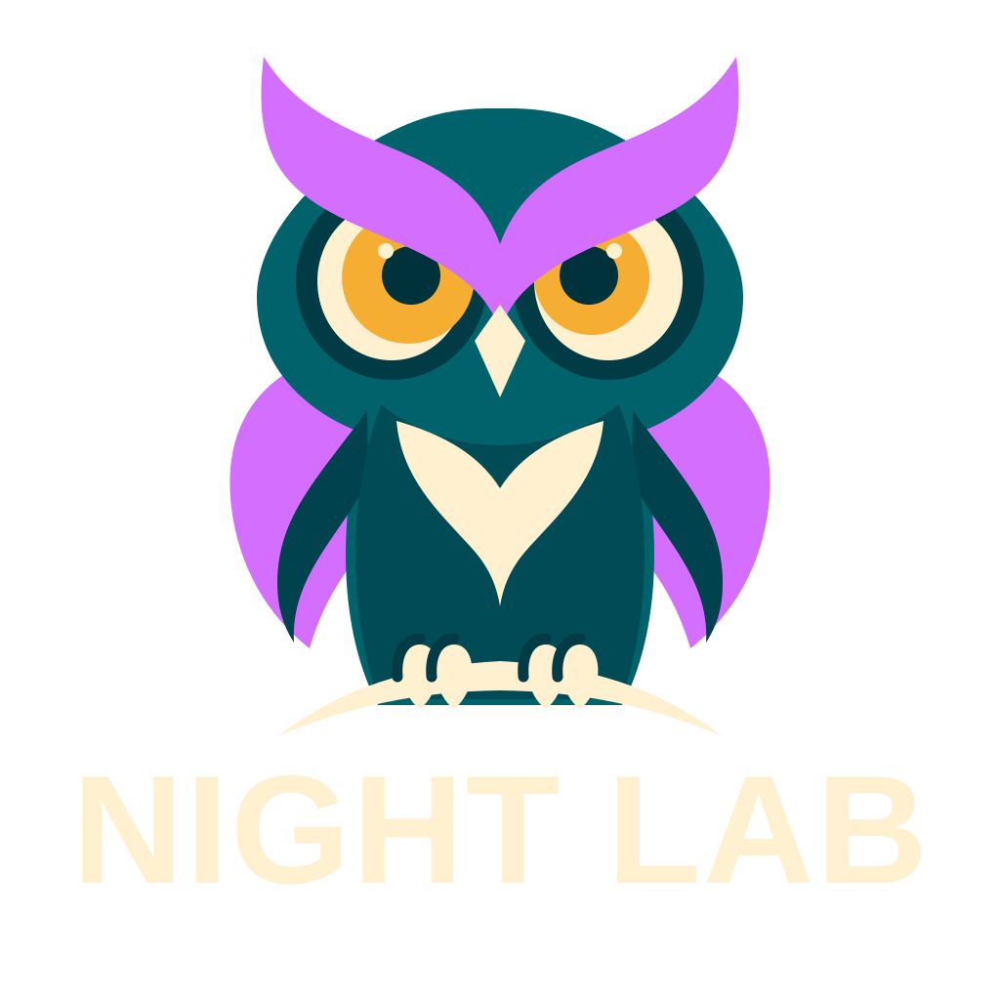

svg-flare
Original at 32, 128 and 512 CSS pixels

Locally recolored version (4 elements)

Recolored plus one edited circle radius: {'element': 'circle', 'attribute': 'r', 'before': '89', 'after': '102.35'}

Original at 32, 128 and 512 CSS pixels
Locally recolored version (4 elements)

Recolored plus one edited circle radius: {'element': 'circle', 'attribute': 'r', 'before': '89', 'after': '102.35'}

Original at 32, 128 and 512 CSS pixels

Locally recolored version (3 elements)

Recolored plus one edited circle radius: {'element': 'circle', 'attribute': 'r', 'before': '59', 'after': '67.85'}
